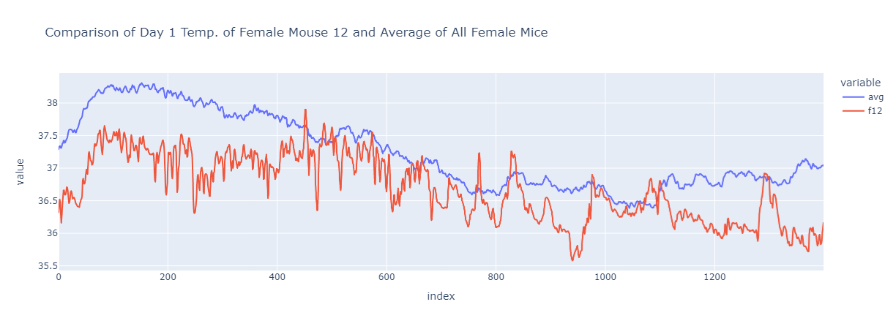

Main Graph
It seems like average core temperature differences are at the highest when female mice are in their estrus period.
Design Decisions
We chose this research question because it was established by the
dataset description that the estrus period in female mice correlates
to higher body temperature in females, but we wanted to explore how
significant that temperature rise is when compared to male mice.
We decided that a line graph would be best for this visualization,
since the temperature of the mice was a quantitative continuous
variable. The line graph would also enable us to easily visualize the
change of average mice temperatures over time. We considered if we
should add in indicators for whether light was on or off in the mice's
environments, but decided not to add it in since it had little
relevance in the question we wanted to explore.
The color of the respective temperature lines is deliberate, since
many people associate the color blue with male and pink with female.
Additionally, each portion of the graph displays whether the female
mice are in the estrus period or not by highlighting the portions
where they are with gray, and leaving the rest of the background
unchanged. This is so that viewers of the plot would be able to
compare the differences in temperatures between estrus days and normal
days with just a look, without needing to know context about the
dataset.
We also created a sub-plot solely dedicated to the differece between
the two groups over time, since that is our primary interest in the
dataset. This helps users easily see where the peak differences occur,
rather than leaving them to compare the two lines of the main
visualization to observe the difference over time.
We implemented tooltips as our interactive element. Users will be able
to hover over a portion of the graph that they want more details on.
This will display the average body temperatures for males and females
at that specific minute, the time, and the difference between the two.
The sub-visualization's tooptip works similarly, showing the time and
difference between the two groups. With these tooltips, users can see
the numeric data for instances of time, and this is especially helpful
for seeing the exact values where the peak differences occur, which,
according to our visualizations, seems to be during the female mice's
estrus period.
Development Process
We met as three to discuss the project and our ideas for it initially, with all three of us putting in equal work to get to that idea. We then divided our efforts. Jeremy worked on the process of creating the visualization through D3, Elvin was responsible for the interactables and styling, and Vincent working mostly on the writeup, site, and leading the initial dataset exploration. Throughout the process, we were very much in close communications. We discussed almost every detail with each other to make sure we were on the same page as a team. Collectively, we each put around 3-4 hours on the project. We started with several crude visualizations created by using the dataset. The graph below was one of our creations, and it inspired us to narrow down our question to what we have now.
Since displaying all 20160 rows would make the visualization unreadable, we tried narrowing down the scale. First, we decided to display hourly data, and we came up with this as a prototype.
Then, a groupmember wanted to see what the data would look like if we displayed the data by minutes instead of hours, and we got this.
We talked about what unit of time we should use for a bit, then decided that if we narrow down the minutes displayed, we can provide a detailed visualization while making it readable. We decided that the first six days of data should suffice, since this time period included two estrus periods for female mice. After this, we got to work on our assigned parts, and eventually created our two interactable visualizations.